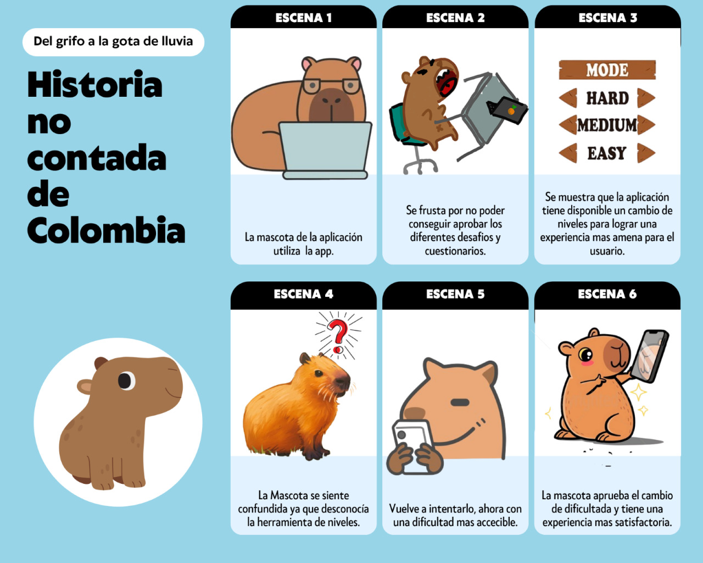
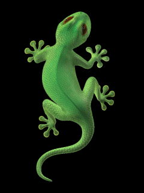

Presentación Final
Pensamiento Interactivo — 2025
Portafolio Final del Semestre
Juan Chávez • Diego Salcedo • Alejandro Montes • Johan Zapata
Trabajo 1 — Video
Trabajo 2 — Video
Trabajo 3 — Imagen

